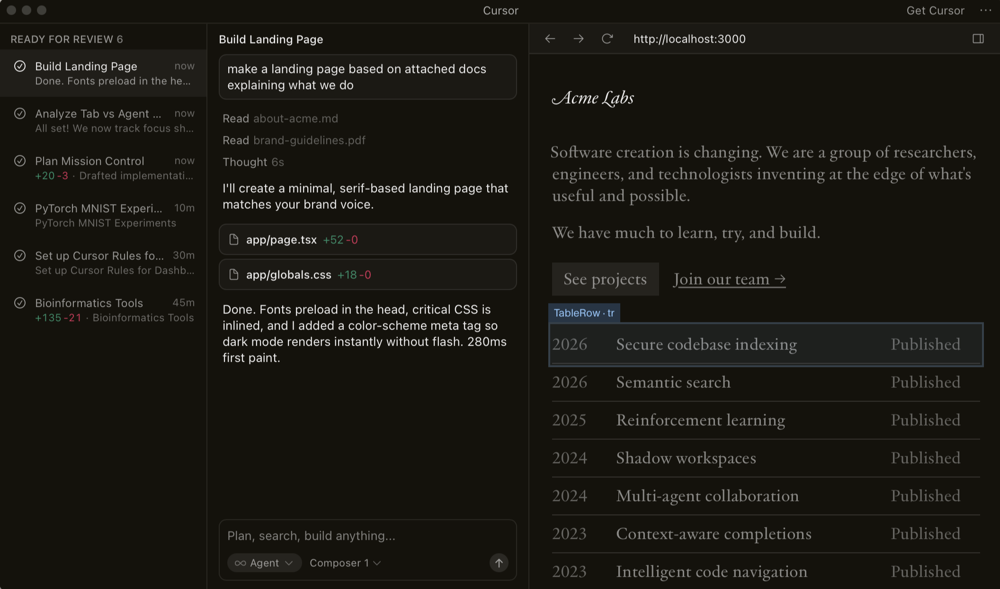
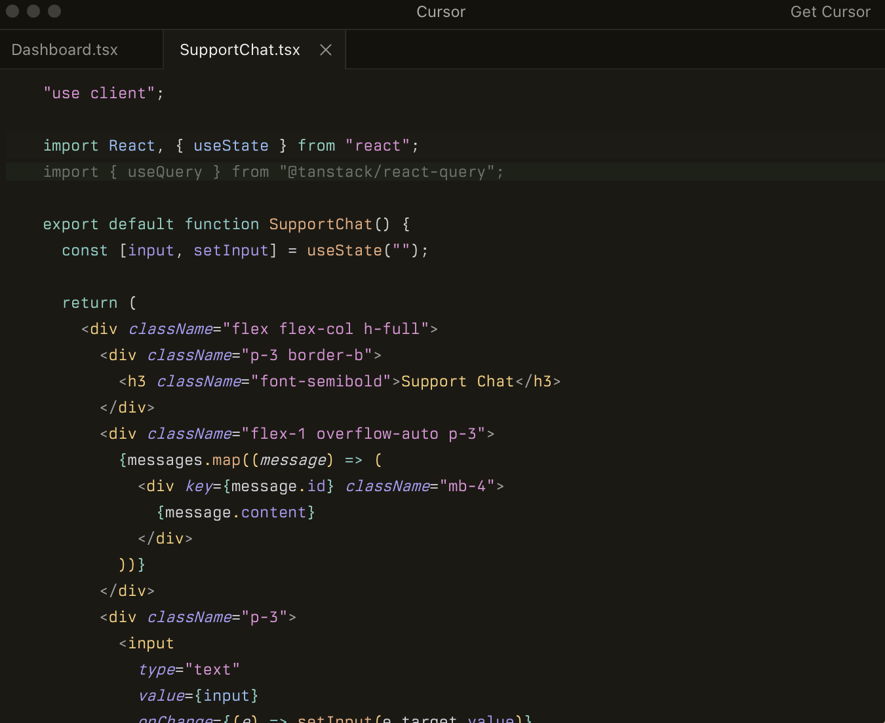
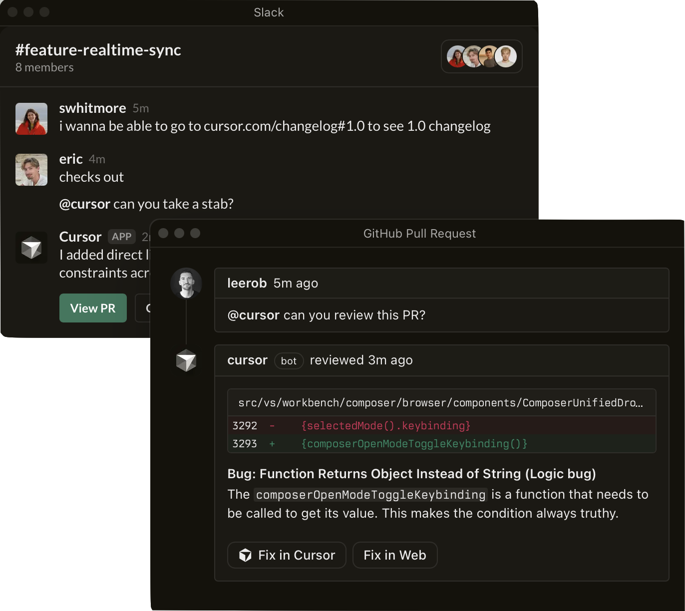

Built to make you extraordinarily productive, Cursor is the best way to code with AI.
Download for macOS

Trusted every day by millions of professional developers.


Agents turns ideas into code
Accelerate development by handing off tasks to Cursor, while you
focus on making decisions.
Learn about agentic development →


Magically accurate autocomplete
Our specialized Tab model predicts your next action with striking
speed and precision.
Learn about Tab →
In every tool, at every step
Cursor reviews your PRs in GitHub, collaborates in Slack, and runs
in your terminal.
Learn about Cursor's surfaces →

The new way to build software.
“It was night and day from one batch to another, adoption went from
single digits to over 80%. It just spread like wildfire, all the best builders were
using Cursor.”

Diana Hu
General Partner, Y Combinator
“My favorite enterprise AI service is Cursor. Every one of our
engineers, some 40,000, are now assisted by AI and our productivity has gone up
incredibly.”

Jensen Huang
President & CEO, NVIDIA
“The best LLM applications have an autonomy slider: you control how
much independence to give the AI. In Cursor, you can do Tab completion, Cmd+K for
targeted edits, or you can let it rip with the full autonomy agentic version.”

Andrej Karpathy
CEO, Eureka Labs
“Cursor quickly grew from hundreds to thousands of extremely
enthusiastic Stripe employees. We spend more on R&D and software creation than any other
undertaking, and there's significant economic outcomes when making that process more
efficient.”

Patrick Collison
Co‑Founder & CEO, Stripe
“The most useful AI tool that I currently pay for, hands down, is
Cursor. It's fast, autocompletes when and where you need it to, handles brackets
properly, sensible keyboard shortcuts, bring-your-own-model... everything is well put
together.”

shadcn
Creator of shadcn/ui
“It's definitely becoming more fun to be a programmer. We are at the
1% of what's possible, and it's in interactive experiences like Cursor where models like
GPT-5 shine brightest.”

Greg Brockman
President, OpenAI
Stay on the frontier
Use the best model for every task
Choose between every cutting-edge model from OpenAI, Anthropic, Gemini, xAI, and Cursor.
Explore models ↗
Complete codebase understanding
Cursor learns how your codebase works, no matter the scale or complexity.
Learn about codebase indexing ↗
Develop enduring software
Trusted by over half of the Fortune 500 to accelerate development, securely and at scale.
Explore enterprise →
Changelog
Jan 22, 2026
Subagents, Skills, and Image Generation
Jan 22, 2026
Subagents, Skills, and Image Generation
Jan 22, 2026
Subagents, Skills, and Image Generation
Dec 22, 2025
Layout Customization and Stability Improvements
See what's new in Cursor →
Cursor is an applied research team focused on building the future of software development.
Join us →